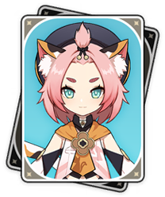

Cryo
Sorry... to also have you shoulder the grievances of the world. Since you could endure my bitter cold, you must have the desire to burn? Then, burn away the old world for me.
Five Stars

Kamisato Ayaka
Frostflake Heron
She is the eldest daughter of the Kamisato Clan and sister of Kamisato Ayato. Being beautiful, elegant, and graceful, the common-folk have nothing to bad-mouth Ayaka about. Because of her social status as the eldest daughter of the Kamisato Clan of the Yashiro Commission and as the Shirasagi Himegimi, Ayaka is seen as a model of perfection.

Eula
Dance of the Shimmering Wave
A descendant of the infamous and tyrannical Lawrence Clan and niece of Schubert, Eula is the captain of the Reconnaissance Company with the Knights of Favonius.

Ganyu
Plenilune Gaze
She serves as an emissary and secretary for the Liyue Qixing.

Qiqi
Icy Resurrection
Resurrected as a zombie by the adepti, she has ended up in Baizhu's care and now works at Bubu Pharmacy in Liyue Harbor.
Four Stars

Rosaria
Thorny Benevolence
She is a member of the Church of Favonius in Mondstadt.

Diona
Kätzlein Cocktail
Despite being a bartender at Cat's Tail, she actually despises alcohol and wants nothing more than to ruin Mondstadt's wine industry—a feat easier said than done when her patrons absolutely love her drinks. She is the daughter of Draff, a hunter in Springvale.

Chongyun
Frozen Ardor
An exorcist from Liyue, Chongyun was born with excessive yang (positive) energy, which has proven to be both a help and a hindrance. It makes him a very effective exorcist, but it also means he has never seen a spirit for himself — they flee before he can even lay eyes on them. It has also made him particularly susceptible to any kind of heat or strong emotion, which leads to some rather... unexpected results.

Kaeya
Frostwind Swordsman
Kaeya is the Cavalry Captain of the Knights of Favonius. He is held in high regard by the people of Mondstadt — even with all his eccentricities and secrets.